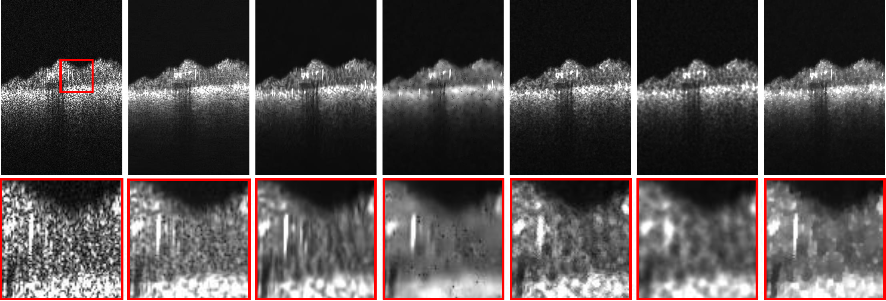

A Statistical Model for OCT Image Denoising
Muxingzi Li, Ramzi Idoughi, Biswarup Choudhury,
Wolfgang Heidrich
Accepted to Biomedical Optics Express

Abstract
Optical coherence tomography (OCT) is a non-invasive technique with
a large array of applications in clinical imaging and biological
tissue visualization. However, the presence of speckle noise affects
the analysis of OCT images and their diagnostic utility. In this article, we
introduce a new OCT denoising algorithm. The
proposed method is founded on a numerical optimization framework based on
maximum-a-posteriori
estimate of the noise-free OCT image. It combines a novel speckle noise model,
derived from local statistics of empirical spectral domain OCT (SD-OCT) data,
with
a Huber variant of total variation regularization for edge preservation. The
proposed approach
exhibits satisfying results in terms of speckle noise reduction as well as
edge preservation, at reduced computational cost.
Paper
Paper [BOE2017_OCT_Denoising.pdf (5.9MB)]
Code & Data [Github Repository]
BitTeX @article{Li:17,
author = {Muxingzi Li and Ramzi Idoughi and Biswarup Choudhury and Wolfgang Heidrich},
journal = {Biomed. Opt. Express},
keywords = {Noise in imaging systems; Speckle; Statistical optics; Image enhancement;
Optical coherence tomography},
number = {9},
pages = {3903--3917},
publisher = {OSA},
title = {Statistical model for OCT image denoising},
volume = {8},
month = {Sep},
year = {2017},
url = {http://www.osapublishing.org/boe/abstract.cfm?URI=boe-8-9-3903},
doi = {10.1364/BOE.8.003903},
}